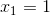

Funcții injective. Monotonia și injectivitatea
Funcții injective
Definiția FE17 : Funcție injectivă
Funcția  se numește injectivă (injecție) dacă, oricare ar fi punctele
se numește injectivă (injecție) dacă, oricare ar fi punctele  cu ne rezultă că
cu ne rezultă că  , adică la elemente diferite le corespund imagini diferite.
, adică la elemente diferite le corespund imagini diferite.
Exemplu:
Fie funcția 
Studiem injectivitatea acestei funcții.
Fie punctele cu
Presupunem prin absurd că 
În acest caz, ne rezultă că:
ceea ce este în contradicție cu ipoteza
Așadar, din , ne rezultă că , iar din Definiția FE15, avem că  este o funcție injectivă.
este o funcție injectivă.
Observație:
Pentru a arăta injectivitatea unei funcții, se cunosc două metote: metoda practică și metoda grafică.
- Practic, pentru a arăta că o funcție este injectivă, luăm
 astfel încât și se demonstrează că ne rezultă doar
astfel încât și se demonstrează că ne rezultă doar 
- Metoda grafică presupune trasarea graficului funcției date și interpretarea acestuia (despre interpretarea grafică a funcției injective vei afla mai multe în paginile următoare).
Exemple:
- Fie funcția Să se verifice dacă funcția este injectivă.
Rezolvare:
Metoda I (criteriul „practic”)
Fie astfel încât .
Ne rezultă că de unde obținem soluțiile  sau
sau
În acest caz, funcția nu este injectivă.
Metoda II (folosind definiția)
Dăm valori pentru
Pentru , avem că
Pentru , ne rezultă că 
Cum  dar , ne rezultă că funcția nu este injectivă.
dar , ne rezultă că funcția nu este injectivă.
- Fie funcția Să se studieze injectivitatea acestei funcții.
Rezolvare:
Această funcție este injectivă, deoarece nu există astfel încât
Din ne rezultă doar că
Propoziția FE18: Criteriul grafic
O funcție este injectivă, dacă orice paralelă la axa  intersectează graficul funcției cel mult o dată.
intersectează graficul funcției cel mult o dată.
Exemplu:
Pentru cele trei exemple date mai sus, avem următoarele grafice, de unde se observă că orice paralelă la axa intersectează graficul funcției cel mult o dată în cazul primei funcții și a ultimei funcții, iar în cazul celei de-a doua funcții, nu avem îndeplinită condiția de injectivitate, deoarece, dacă am trasa o paralelă la axa , aceasta va intersecta graficul funcției de două ori (avem că și , ceea ce contrazice definiția injectivității):
- - funcție injectivă

- - nu este o funcție injectivă

 - funcție injectivă
- funcție injectivă

Monotonie și injectivitate
Proproziția FE19: Relația dintre monotonie și injectivitate
Dacă funcția este strict monotonă pe intervalul  , atunci este o funcție injectivă.
, atunci este o funcție injectivă.
Demonstrație:
Conform Definiției FE11: Monotonia unei funcții, subpunctul v., spunem că o funcție este monotonă pe mulțimea , dacă funcția este crescătoare sau descrescătoare pe mulțimea .
Astfel, avem următoarele cazuri:
- Presupunem că funcția este monoton crescătoare.
Conform Definiției FE11, ii., avem:
.
Ceea ce am scris mai sus este echivalent cu definiția injectivității, deoarece, pentru , ne rezultă că
- Presupunem că funcția este monoton descrescătoare.
Din Definiția FE11, iv., ne rezultă:
f(x_2)">.
Analog cazului anterior și această afirmație verifică definiția injectivității.